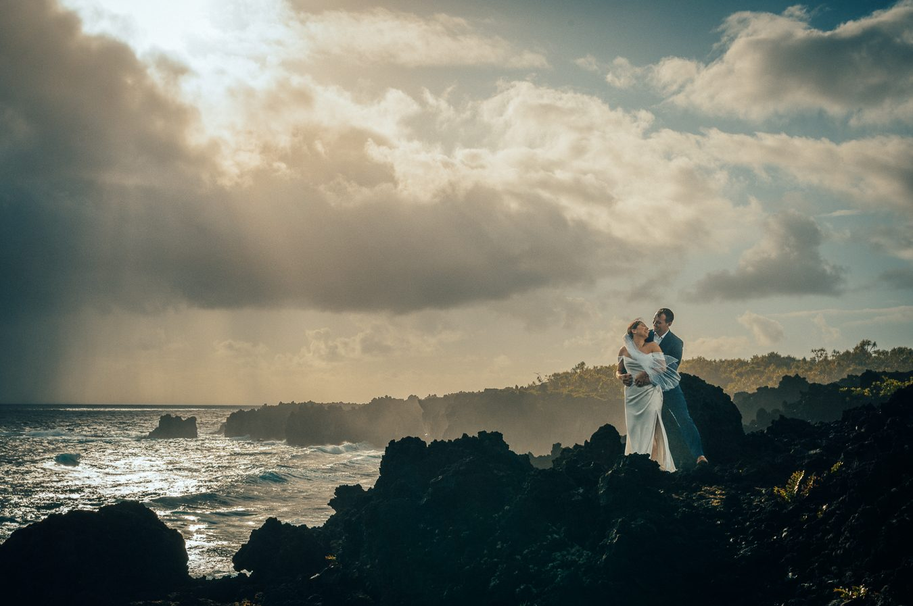
MAUI WEDDING PHOTOGRAPHER & ELOPEMENTSA poetic wedding in Maui.
Honest emotions, honest colors and honest photography.
25+ years of Maui weddings. One enduring promise.
Experience matters when everything is happening at once.
For more than 25 years, our family has photographed Maui’s changing light, weather and celebrations. We know when to guide, when to anticipate and when to quietly let the moment unfold.
Your final collection balances the ceremony, the people you love and the atmosphere that could only belong to Maui.
As a Maui wedding photographer, we cover everything from small, private elopements for two to full wedding-day celebrations with family and guests — working across Wailea, Makena, Kapalua and South Maui depending on the location, light and privacy you want.
What’s IncludedMeet Our Maui Wedding Officiant →
Everything you need to say “I do” in Maui.
One family, one booking. Your officiant, flowers, photography, beach permit and insurance are handled for you, so the only thing left to plan is the moment itself.
Includes up to 15 guests. Additional guests $20 each, up to 30 on the beach or 100 on private property.
Native Hawaiian wedding officiant
Your ceremony is led by Derick Sebastian, our Native Hawaiian officiant. He also takes care of your marriage license, with a consultation arranged once your deposit is in. Meet Derick →
Florals by our in-house florist
Mya of Āpuakea’s Flowers creates a standard bouquet, leis and a wedding arch for your ceremony. Meet Mya →
1.5 hours of photography
200+ edited, high-resolution images, delivered within 24–48 hours.
Beach permit & liability insurance
Your beach permit and General Liability Insurance are included and taken care of for you.
Up to 15 guests
Fifteen guests are included. Each additional guest is $20, up to 30 guests on the beach or 100 on private property.
Live streaming for family & friends
We set up your phone on our tripod with our microphones, so everyone back home can watch the ceremony live.
Upgrades available: upgraded floral options and video reels can be added to your package. Ask us when you reserve your date.

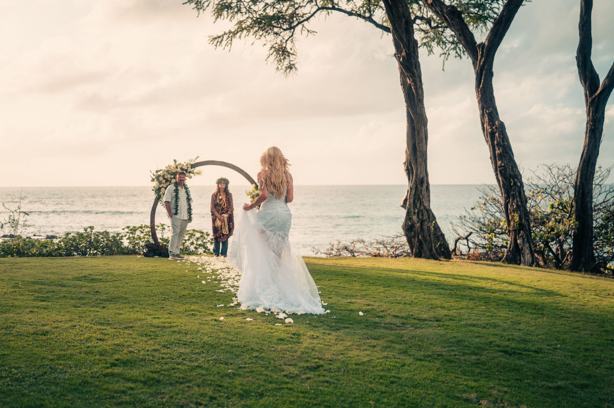
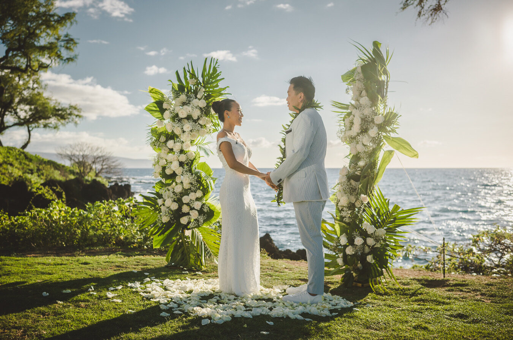


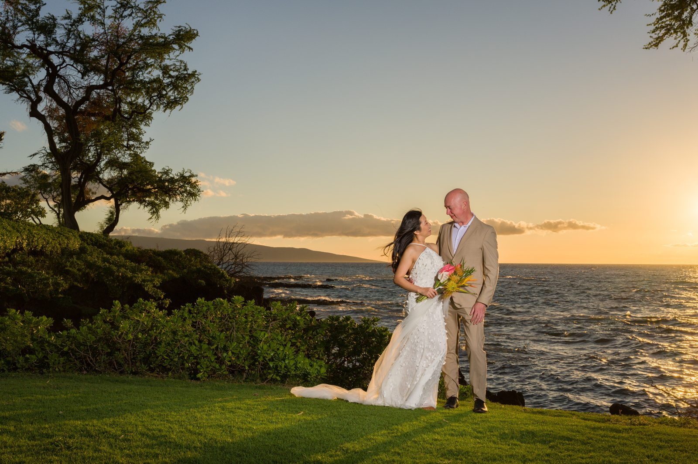
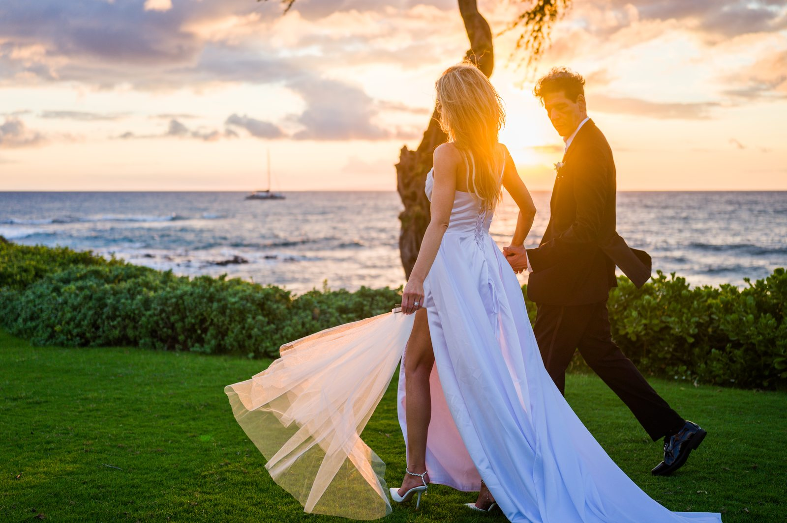
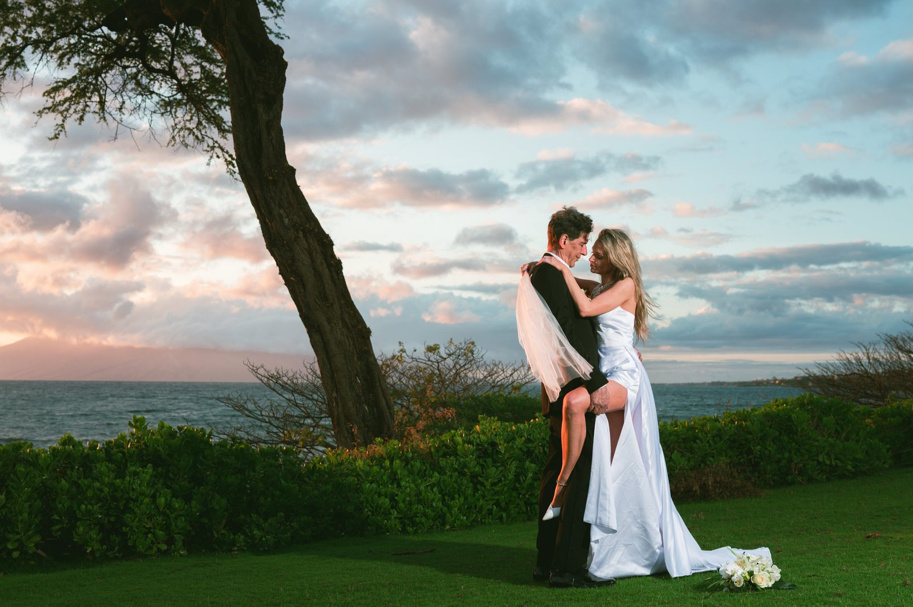
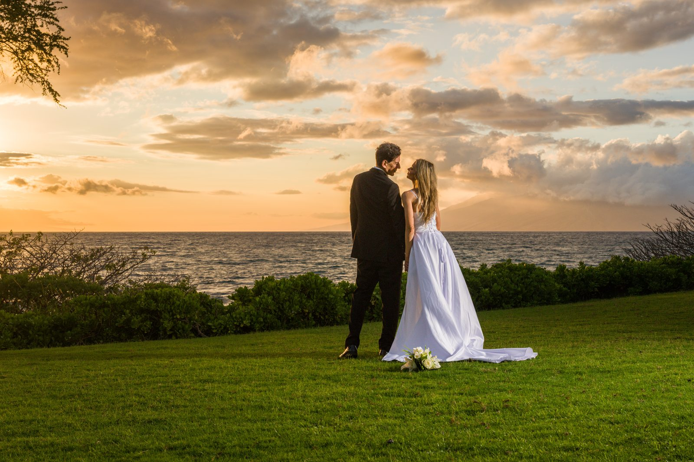
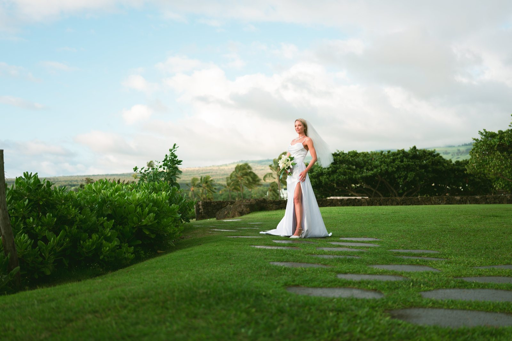
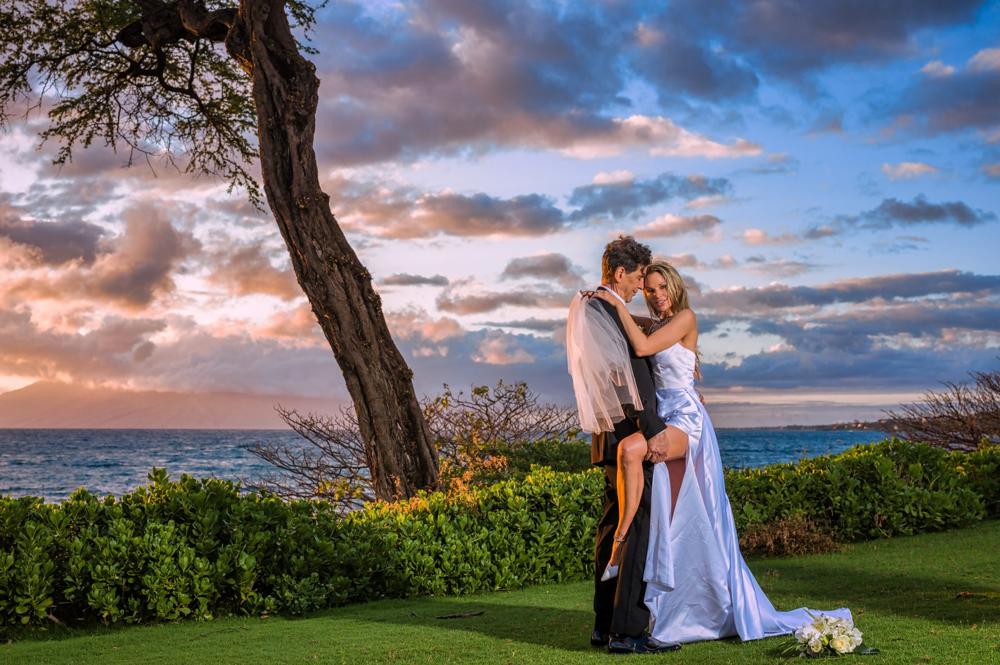
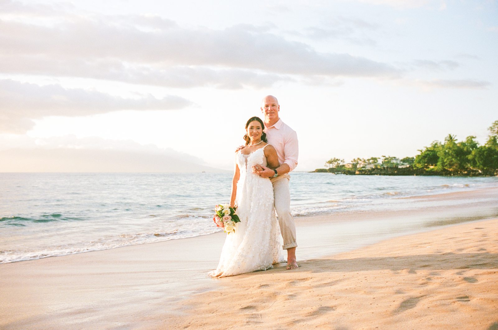
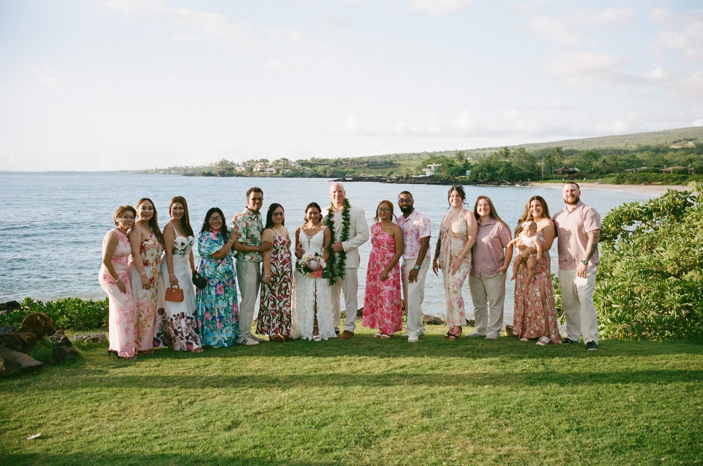
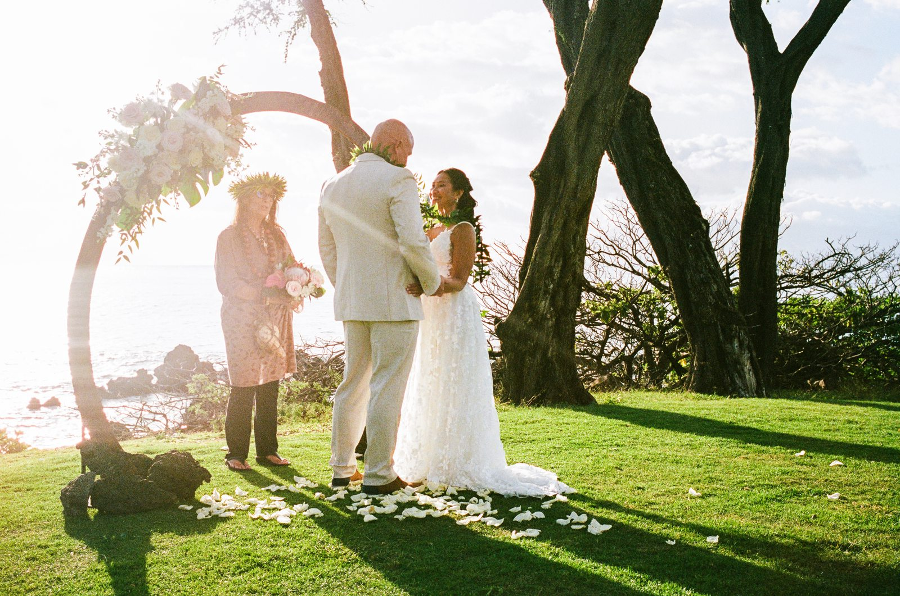
Years of Maui weddings, weather, light and unrepeatable moments.
Wailea · Makena · South Maui
Eloping to Maui, simply and legally.
Just the two of you
Our all-inclusive package works beautifully for an elopement: a Native Hawaiian officiant, florals, beach permit and photography, with no planning required beyond choosing your date.
The marriage license
Our officiant takes care of the Hawaii marriage license, and you meet with him for a consultation once your deposit is paid.
Family at home
Live streaming is included, so the people who could not travel can still watch you say your vows.
See the full package · What a Maui wedding costs · Our officiant · Our florist
What couples ask us first.
How much does a Maui wedding cost with Wailea Photo?
Our all-inclusive wedding package is $2,599, tax included: a $100 deposit secures your date, with a remaining balance of $2,499. It includes a Native Hawaiian officiant, a standard bouquet, leis and wedding arch from our in-house florist, 1.5 hours of photography with 200+ edited images delivered within 24–48 hours, the beach permit, General Liability Insurance and a live-streaming setup for family and friends. How that compares with other Maui packages →
What does the wedding package include?
Officiant, florals (bouquet, leis and arch), 1.5 hours of photography with 200+ edited images, beach permit, General Liability Insurance and a live-streaming setup using your phone with our tripod and microphones. Floral upgrades and video reels are available as add-ons.
How many guests can we have?
The package includes up to 15 guests. Each additional guest is $20. Beach weddings are limited to 30 guests; weddings on private property can have up to 100.
Do you help with the Hawaii marriage license?
Yes. Derick Sebastian, our officiant, takes care of your Hawaii marriage license. Once your deposit is in, we arrange a consultation with him to walk you through it and plan your ceremony.
Can we have chairs at our beach wedding?
Not on the beach: state permit rules do not allow chairs at beach weddings. Chairs are fine for weddings on private property.
What if the sunset is cloudy?
We love clouds. They soften the light and soften skin tones, and some of our most beautiful wedding images are made on partly cloudy evenings. A cloudy sunset is not a reason to reschedule; rain is.
What happens if it rains?
If it rains, we will attempt to reschedule your wedding. That is why we suggest planning it early in your trip rather than on your last day, so there is room to move it.
How do we secure our wedding date?
A $100 deposit reserves your date. The remaining balance is $2,499.
Do you photograph elopements as well as full weddings?
Yes. We photograph everything from small, intimate elopements for two to full wedding-day coverage with family and guests.
What is the best time of day for Maui wedding photos?
Late afternoon into golden hour and sunset gives the softest light and the true island color Maui is known for. We help you plan ceremony timing around it.
How far in advance should we book?
Several months ahead is recommended, especially for peak wedding season and sunset time slots, which book first.
Do you photograph weddings outside of Wailea?
Yes. While based in Wailea, we regularly photograph weddings and elopements throughout Makena, Kapalua and South Maui.
Your archive begins here.
Share your date, location and what you want the photographs to feel like.
Inquire About Your Wedding
What a Maui beach wedding costs in 2027
What a Maui beach wedding costs in 2027: package prices compared, the marriage license, Hawaii tax, guest limits and what is included.
Read the guide
Our Choice for a Maui Wedding Officiant
Why we recommend Derick Sebastian, a licensed Maui officiant and ukulele artist, based on our own experience photographing his ceremonies.
Read the guide
Where to park at Maluaka Beach
The correct upper parking lot, walking path, map link, and meeting areas for portrait sessions and wedding ceremonies in Makena.
Read the guide